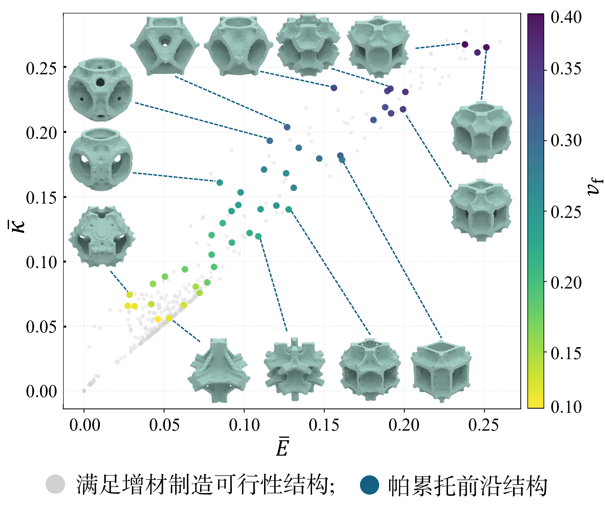
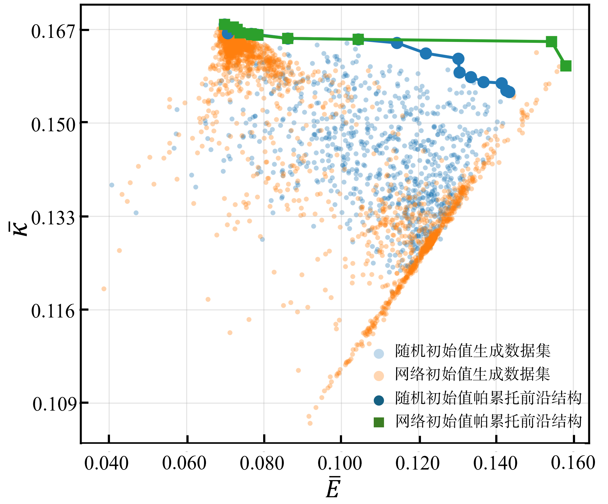
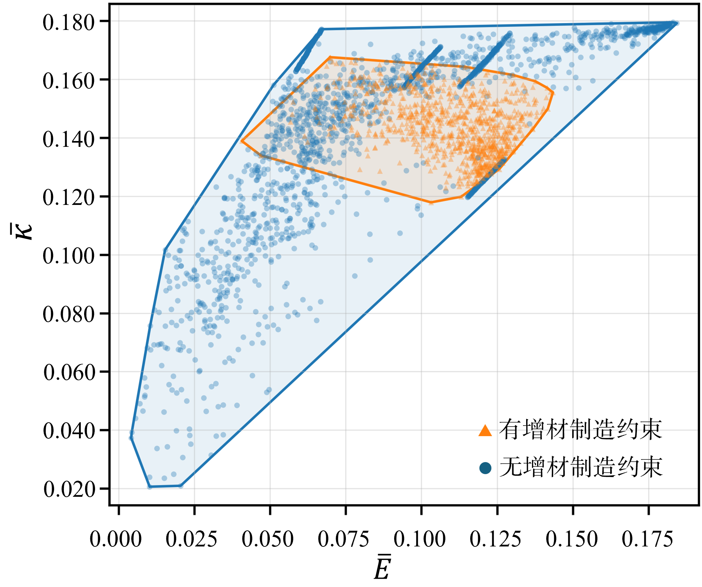
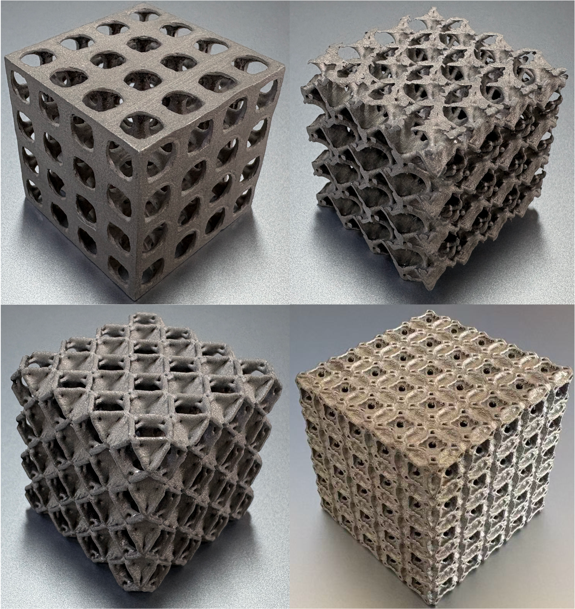

摘要
晶格超材料为轻量化和多功能结构设计提供了重要基础，而增材制造使复杂晶格几何的制备成为可能。然而，面向增材制造的多物理场晶格单元设计仍面临挑战：力学与热学目标天然存在冲突，可制造性约束（包括悬垂、封闭腔体和受限排粉通道）会显著压缩可行设计空间。本文提出一种面向可制造性的晶格优化方法，将可微形式的制造约束嵌入逆均匀化拓扑优化框架，在同一优化过程中联合考虑多物理场性能与可制造性。进一步提出渐进式帕累托前沿构建机制。目标性能条件化的密度生成网络对相邻非支配解的潜在表示进行插值，并将其解码为用于优化的初始密度场。通过迭代更新网络和非支配解集，逐步提升可制造非支配解的覆盖范围。实验表明，该方法能够捕捉多物理场权衡，显著降低制造风险，并高效生成可制造的非支配设计。
结果

优化得到的晶格揭示了由体积分数决定的刚度—导热率权衡：更高的体积分数可增强承载与导热路径，但会压缩排粉空间。

在相同优化预算下，网络初始化构建出的非支配前沿质量优于随机初始化。

制造约束压缩了可达到的性能空间，同时将候选设计引导至更符合实际增材制造要求的区域。

考虑制造约束的金属打印件呈现出连通良好的实体网络和开放的孔道。
文献引用（BibTeX）
@article{xingTBDlattice,
title={Lattice Structure Optimization for Additive Manufacturing:
Manufacturability-Driven Design and Pareto Front Construction},
author={Xing, Yu and Liu, Yang and Lu, Lin},
journal={Journal of Computer-Aided Design \& Computer Graphics},
year={TBD},
doi={10.3724/SP.J.1089.2026-00157},
url={https://www.jcad.cn/article/doi/10.3724/SP.J.1089.2026-00157}
}